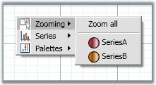
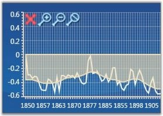
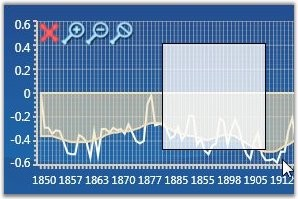
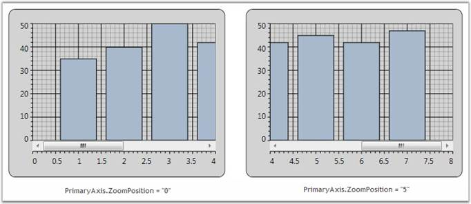
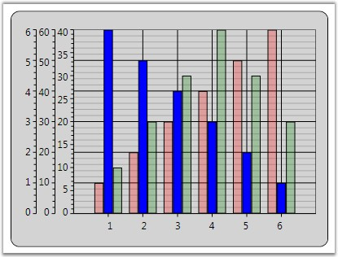
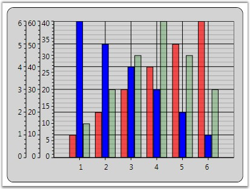
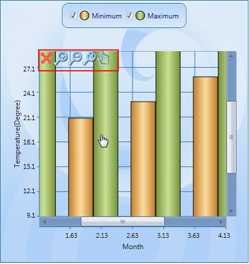

Chart for WPF lets you zoom into a narrower range within the chart area. This section discusses the below topics.
Zooming Using Mouse
You can switch to the zooming mode in the Chart by using the built-in context menu. Users can choose to zoom a specific series, if they do so, the rest of the series will be rendered semi-transparently, based on the InactiveSeriesOpacityOnZoom property (discussed later in this section).

Figure 232: Built-In Context Menu to Enable Zooming
Zoom Using Zooming Toolkit
In the Zooming mode, a Zooming toolkit is displayed at the top-left corner of the ChartArea. Using the buttons in the Zooming toolkit, ChartSeries can be zoomed in, out, reset or closed (to exit zoom mode).

Figure 233: Zooming Enabled - Zooming Toolkit at the Top - Left Corner
Display/Hide Buttons in Zooming Toolkit
The visibility of the Zooming Toolkit or the individual buttons in the toolkit can be controlled by using the following properties.
Table 155: Property Table
|
Property |
Description |
|
ZoomInButtonVisibility |
gets or sets zoom in button visibility |
|
ZoomOutButtonVisibility |
gets or sets zoom out button visibility |
|
ZoomCloseButtonVisibility |
gets or sets zoom close button visibility |
|
ZoomResetButtonVisibility |
gets or sets zoom reset button visibility |
|
ZoomingToolkitVisibility |
gets or sets zooming toolkit visibility |
|
[XAML]
<sfchart:ChartArea sfchart:ChartZoomingToolkit.ZoomInButtonVisibility="Collapsed" sch:ChartZoomingToolkit.ZoomOutButtonVisibility="Hidden" sch:ChartZoomingToolkit.ZoomResetButtonVisibility="Collapsed" sch:ChartZoomingToolkit.ZoomingToolkitVisibility="Visible"> <!—-your code here--!> </sfchart:ChartArea> |
|
[C#]
ChartZoomingToolkit.SetZoomInButtonVisibility(chartArea, Visibility.Collapsed); ChartZoomingToolkit.SetZoomOutButtonVisibility(chartArea, Visibility.Hidden); ChartZoomingToolkit.SetZoomResetButtonVisibility(chartArea, Visibility.Collapsed); ChartZoomingToolkit.SetZoomingToolkitVisibility(chartArea, Visibility.Visible); |
Zooming by Manual Drag
You can also manually drag-select an area to perform the zoom operation.

Figure 234: Drag-Select Area to Zoom
Zooming Through Code
Chart can be zoomed programmatically by using Chart Commands, Keyboard Keys and Pre-defined Properties.
Zooming Using Chart Commands
Zooming mode can be enabled by calling the appropriate Chart Commands.
|
[C#]
// To enter Zooming mode. ChartAreaCommands.SwitchZooming.Execute(null, chart1.Areas[0]);
// To perform Zoom In. ChartAreaCommands.ZoomIn.Execute(null, Chart1.Areas[0]);
// To perform Zoom Out. ChartAreaCommands.ZoomOut.Execute(null, Chart1.Areas[0]);
// To Perform Zoom Reset. ChartAreaCommands.ZoomReset.Execute(null, Chart1.Areas[0]);
// To Close the Zooming Toolkit again, use CancelZooming (exit zooming mode). ChartAreaCommands.CancelZooming.Execute(null, Chart1.Areas[0]); |
Enabling Zooming Without Using Zooming Toolkit
Drag-select an area in the Chart to enable zooming when the zooming toolkit is invisible. The following code snippet illustrates this.
|
[C#]
// Enable zoom mode. ChartAreaCommands.SwitchZooming.Execute(null, Chart1.Areas[0]);
// Hide the zooming toolkit. ChartZoomingToolkit.SetZoomingToolkitVisibility(Chart1.Areas[0], Visibility.Collapsed); |
Zoom Using Keyboard Keys
You can enable zooming by using the keyboard keys. The following code snippet shows how the ChartArea can be Zoomed by using the
ALT+I key combination.
|
[C#]
// Adding Key Gesture Alt + I keys to Zoom In the Chart Area. KeyGesture gesture = new KeyGesture(Key.I, ModifierKeys.Alt); KeyBinding zoomInGesture = new KeyBinding(ChartAreaCommands.ZoomIn, gesture) { CommandTarget = this.Chart1.Areas[0] }; this.InputBindings.Add(zoomInGesture); |
Zooming using Pre-defined Properties
ZoomFactor
The Chart can be zoomed by using the Axis.ZoomFactor property. The ZoomFactor is usually between 0 and 1. When set to 1, the chart will not be zoomed. When set to 0.5, the size of the chart will be doubled. Scrollbars will be automatically displayed to allow any section of the hidden range to be viewed. The default value is 1.
|
[C#]
// Zoom the Chart with Zoom factor 0.5. this.Chart1.Areas[0].PrimaryAxis.ZoomFactor = 0.5; |
ZoomPosition
You can also programmatically specify the scrollbar position of the zoomed-in axes by using the Axis.ZoomPosition property.
The following code snippet shows how the chart with values 0 to 5 will have the scrollbar positioned near point 5, when the ChartAxis is zoomed, with the ZoomFactor set to 0.5.
|
[C#]
// Zoom the Chart with Zoom factor 0.5. this.Chart1.Areas[0].PrimaryAxis.ZoomFactor = 0.5;
// Position the ScrollBar to point 5. this.Chart1.Areas[0].PrimaryAxis.ZoomPosition = 5; |

Figure 235: Zoom Position Set
Disable Zooming
Zooming using mouse can be disabled for a particular axis by using the EnableZooming property. The following code snippet illustrates how zooming is disabled only for the Primary axis of the ChartArea while it is enabled for the other axes.
|
[XAML]
<syncfusion:ChartArea.PrimaryAxis> <syncfusion:ChartAxis EnableZooming="False"/> </syncfusion:ChartArea.PrimaryAxis> |
|
[C#]
this.Chart1.Areas[0].PrimaryAxis.EnableZooming = false; |
 Note: EnableZooming property is useful to
disable zooming using mouse and keyboard keys. But it will not take effect when
the ZoomFactor property is set. When ZoomFactor property is set between 0 to 1,
and EnableZooming property is set to False, the axis will still be
zoomed.
Note: EnableZooming property is useful to
disable zooming using mouse and keyboard keys. But it will not take effect when
the ZoomFactor property is set. When ZoomFactor property is set between 0 to 1,
and EnableZooming property is set to False, the axis will still be
zoomed.
Zooming Specific ChartAxis Associated with a ChartSeries Through Code
The Axis associated with a particular ChartSeries can be enabled/disabled through the Zooming functionality. This is achieved by using the series.IsZoomable property.
The following code illustrates how zooming can be disabled for all the axis in Chart and enabled only for the axis associated with Chart Series2.
|
[C#]
<syncfusion:Chart> <syncfusion:ChartArea IsContextMenuEnabled="True" ZoomAllAxes="False"> <syncfusion:ChartSeries Label="Series1" Data="1 1 2 2 3 3 4 4 5 5 6 6" Interior="Red" /> <syncfusion:ChartSeries Label="Series2" Data="1 60 2 50 3 40 4 30 5 20 6 10" IsZoomable="True" Interior="Blue"> <syncfusion:ChartSeries.YAxis> <syncfusion:ChartAxis Orientation="Vertical"/> </syncfusion:ChartSeries.YAxis> </syncfusion:ChartSeries> <syncfusion:ChartSeries Label="Series3" Data="1 10 2 20 3 30 4 40 5 30 6 20" Interior="Green"> <syncfusion:ChartSeries.YAxis> <syncfusion:ChartAxis Orientation="Vertical"/> </syncfusion:ChartSeries.YAxis> </syncfusion:ChartSeries> </syncfusion:ChartArea> </syncfusion:Chart> |
|
[C#]
void Window1_Loaded(object sender, RoutedEventArgs e) { Chart1.Areas[0].ZoomAllAxes = false; Chart1.Areas[0].Series[1].IsZoomable = true; } |
The following screen shot illustrates this.

Figure 236: Zooming Enabled Programmatically on a Specific ChartAxis associated with Series2
Note: Series.IsZoomable is used to enable/disable
the zooming of the Axis associated with it. Hence this property is used only in
Multiple Axes Charts. This property takes effect only when zooming is performed
through code. (Refer to Zooming using Keyboard Keys in this page for zooming
through keyboard keys). When zooming is enabled / disabled through the context
menu, this property will not take effect.
Inactive Series Opacity
When an individual series in the chart is zoomed, the opacity of the series which have not been zoomed can be controlled, so that the series which is zoomed is clearly visible. This can be done by using the InactiveSeriesOpacityOnZoom property of the ChartSeries.
The following lines of code can be used to change the opacity of an inactive series while zooming.
|
[XAML]
<syncfusion:ChartSeries Name="Series1" Label="Series1" Interior="Red" InactiveSeriesOpacityOnZoom="0.65" Data="1 1 2 2 3 3 4 4 5 5 6 6"/> |

Figure 237: Volume Series Rendered Semi-Transparently when the MSFT Series is being Zoomed
Fractional Values in Axis while Zooming
On zooming the chart, the ChartAxis Labels appear with fractional values. This can be restricted by using the Axis.IsFractionEnabledOnZoom property.
|
[XAML]
<syncfusion:Chart Name="Chart1" Height="300" Width="400"> <syncfusion:ChartArea IsContextMenuEnabled="True" > <syncfusion:ChartArea.SecondaryAxis> <syncfusion:ChartAxis IsFractionEnabledOnZoom="False" /> </syncfusion:ChartArea.SecondaryAxis> <syncfusion:ChartSeries Name="Series1" Label="Series1" Interior="Red" Data="1 1 2 2 3 3" /> </syncfusion:ChartArea> </syncfusion:Chart> |
|
[C#]
// Hides fractional values in Secondary Axis labels. Chart1.Areas[0].SecondaryAxis.IsFractionEnabledOnZoom = false; |
For more details, refer to the sample in the following location:
...\My Documents\Syncfusion\EssentialStudio\<Version Number>\WPF\Chart.WPF\Samples\3.5\WindowsSamples\User Interaction\Zoom And Scrolling Demo
Zooming and Panning support for Chart WPF
Essential Chart WPF is now enhanced with Zooming and Panning. This feature is used to drag the Zoomed chart area from one point to the other.
Adding Zooming and Panning
Add Zooming and Panning to the chart, by using the following code.
|
[Xaml]
<syncfusion:Chart Name="Chart1" Grid.Row="1" Margin="10"> <syncfusion:ChartArea Name="area" IsContextMenuEnabled="True"/> < syncfusion:Chart/> |
|
[C#]
ChartArea area = this.Chart1.Areas[0]; area.IsContextMenuEnabled = true; |

Figure 238: Zooming and Panning
See Also
Highlighting and Selection, Chart Area ContextMenu